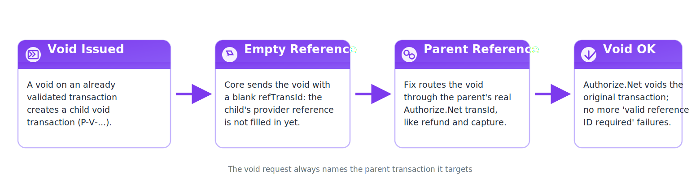

Authorize.Net Void Fix
Fix post-validation voids failing with "A valid referenced transaction ID is required" — use the parent transaction's real transId.
Fixes Failed Voids
Voids after validation/authorization were sent with an empty refTransId and rejected — this module sends the parent’s real Authorize.Net transId instead.
Matches Refund & Capture
Uses the same source-transaction reference pattern core already uses for refunds and captures.
Safe Fallback
If no source transaction is linked, falls back to the child transaction’s own reference rather than voiding with an empty string.
Zero Configuration
Install and forget — the fix applies to every Authorize.Net void.
How it works
- Install the module alongside payment_authorize.
- A payment is validated or authorized, then voided (e.g. cancellation flows).
- The void request now carries the source transaction’s provider reference.
- Authorize.Net accepts the void — no more "valid referenced transaction ID required" errors.

Screenshots


Frequently asked questions
How do I install and configure the module?
Install it like any Odoo module (Apps > Update Apps List, then Install). It works alongside the standard payment_authorize module and needs no configuration — the fix applies to every Authorize.Net void automatically.
Which Odoo versions does it support?
This module is built for Odoo 19.0 (module version 19.0.1.0.0) and is live-tested on Odoo 19 Community Edition.
What if the module doesn't work as expected?
This module is free on the store. Paid apps on the Odoo Apps Store are covered by the store's refund policy: buyers may request a refund within 14 days of purchase if the app does not work as described.
How fast is support?
Questions get a reply within one business day at stephen@loomworks.dev.
Is my data safe?
Yes. The module runs entirely inside your own Odoo database and collects nothing. It adds no external calls beyond the Authorize.Net transactions your Odoo already makes.
Does it change refunds or captures?
No. Refunds and captures already use the source transaction's reference in core, and this module only makes voids behave the same way. Nothing else is touched.